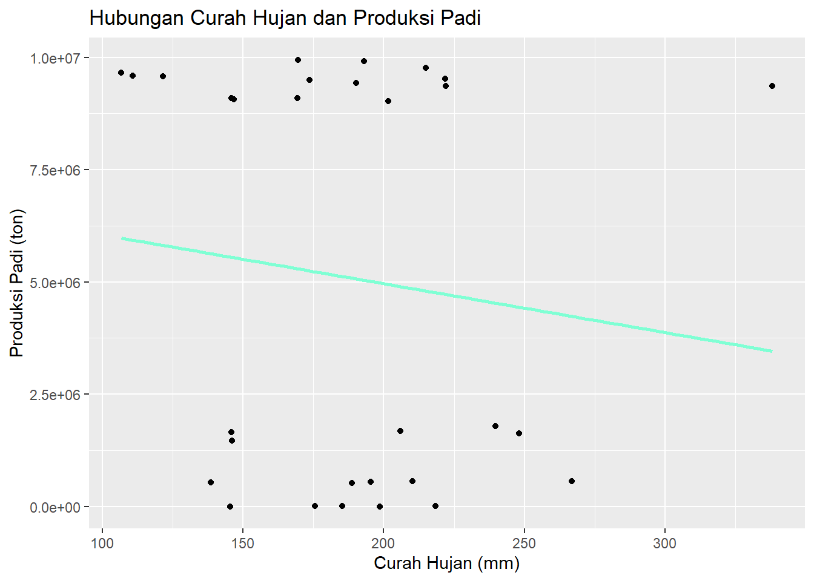

Analisis Pola Curah Hujan dan Dampaknya Bagi Produksi Padi di Pulau Jawa Tahun 2019-2023
Metode Penelitian Politeknik APP Jakarta
Author
Nayla Rumaisyha Khairani
Published
January 13, 2025
1 Pendahuluan
1.1 Latar belakang
Pulau Jawa dikenal sebagai salah satu pusat produksi padi terbesar di Indonesia. Dengan kondisi tanah yang subur dan dukungan iklim tropis, Pulau Jawa menjadi andalan dalam memenuhi kebutuhan pangan nasional. Namun, dalam beberapa tahun terakhir, pola curah hujan di wilayah ini menunjukkan perubahan yang signifikan. Kadang curah hujan terlalu tinggi, menyebabkan banjir dan gagal panen, atau terlalu rendah sehingga menyebabkan kekeringan dan berkurangnya produksi.
Perubahan pola curah hujan ini menarik perhatian, karena curah hujan adalah faktor kunci dalam keberhasilan pertanian padi. Dalam sistem pertanian tradisional, petani sangat bergantung pada musim hujan untuk memenuhi kebutuhan air sawah. Ketika curah hujan tidak teratur, petani sering mengalami kesulitan dalam menentukan waktu tanam yang tepat, yang akhirnya berdampak pada hasil panen.
Penelitian ini penting dilakukan untuk mengidentifikasi pola curah hujan di Pulau Jawa selama beberapa tahun terakhir (2019–2023) dan melihat bagaimana perubahan ini memengaruhi produksi padi. Dengan mengetahui pola tersebut, kita dapat memberikan solusi yang lebih tepat untuk membantu petani menghadapi tantangan ini. Misalnya, apakah perlu memperbaiki sistem irigasi, mengadopsi teknologi pertanian modern, atau menyesuaikan jadwal tanam dengan perubahan musim.
1.2 Ruang lingkup
Dalam penelitian ini penulis mengambil objek dari Badan Pusat Statistik dan Badan Meteorologi, Klimatologi, dan Geofisika. Ruang lingkup penelitian ini terdapat 2 variabel antara lain Curah Hujan Pulau Jawa dan Produksi Padi Pulau Jawa. Data yang digunakan adalah data yang bersifat time series yaitu dalam kurun waktu 2019-2023.
1.3 Rumusan masalah
Bagaimana pola curah hujan di Pulau Jawa selama 2019-2023?
Bagaimana hubungan antara curah hujan dan produksi padi?
1.4 Tujuan dan manfaat penelitian
Penelitian ini bertujuan untuk:
Mengidentifikasi pola curah hujan di Pulau Jawa selama periode 2019–2023.
Menganalisis dampak perubahan pola curah hujan terhadap produksi padi di Pulau Jawa.
Memberikan rekomendasi bagi petani dan pemangku kebijakan dalam menghadapi tantangan akibat perubahan pola curah hujan.
Manfaat Penulisan Penelitian ini diharapkan memberikan manfaat kepada berbagai pihak, di antaranya:
A. Petani:
Membantu petani memahami pola cuaca sehingga dapat menentukan waktu tanam yang lebih tepat.
Memberikan solusi praktis untuk mengurangi risiko gagal panen akibat perubahan cuaca.
B. Pemerintah dan Pemangku Kebijakan:
Memberikan dasar untuk menyusun kebijakan terkait pengelolaan sumber daya air dan irigasi.
Membantu dalam merencanakan program adaptasi dan mitigasi perubahan iklim di sektor pertanian.
C. Akademisi dan Peneliti:
Menambah referensi dalam kajian perubahan iklim dan dampaknya pada sektor pertanian.
Memberikan bahan untuk penelitian lanjutan terkait hubungan pola curah hujan dan hasil pertanian.
1.5 Package
library(tidyverse)
── Attaching core tidyverse packages ──────────────────────── tidyverse 2.0.0 ──
✔ dplyr 1.1.4 ✔ readr 2.1.5
✔ forcats 1.0.0 ✔ stringr 1.5.1
✔ ggplot2 3.5.1 ✔ tibble 3.2.1
✔ lubridate 1.9.3 ✔ tidyr 1.3.1
✔ purrr 1.0.2
── Conflicts ────────────────────────────────────────── tidyverse_conflicts() ──
✖ dplyr::filter() masks stats::filter()
✖ dplyr::lag() masks stats::lag()
ℹ Use the conflicted package (<http://conflicted.r-lib.org/>) to force all conflicts to become errors
library(readxl)
2 Studi pustaka
Produksi padi di Indonesia sangat dipengaruhi oleh faktor lingkungan, salah satunya adalah curah hujan. Curah hujan yang ideal menjadi kunci keberhasilan dalam produksi padi, namun ketidakteraturan pola hujan dapat memengaruhi produktivitas pertanian.
Menurut BMKG (2023), perubahan pola curah hujan di Pulau Jawa disebabkan oleh anomali iklim global seperti fenomena El Niño dan La Niña. Fenomena ini menyebabkan distribusi curah hujan menjadi tidak merata, sehingga terjadi kekeringan di satu wilayah dan banjir di wilayah lain.
Penelitian oleh Setiawan et al. (2020) menunjukkan bahwa pola curah hujan yang tidak menentu dapat memengaruhi fase pertumbuhan padi, terutama pada fase vegetatif dan generatif. Selain itu, sistem irigasi yang kurang memadai menjadi salah satu penyebab utama ketergantungan petani pada curah hujan.
Teori tentang hubungan curah hujan dan hasil panen dijelaskan oleh Hidayat (2018), yang mengungkapkan bahwa curah hujan berlebih atau kekurangan air dapat menurunkan hasil produksi hingga 20%. Oleh karena itu, pengelolaan air yang efektif dan pemahaman terhadap pola curah hujan sangat penting dalam mendukung keberlanjutan produksi padi.
Penelitian ini menggunakan dasar teori dari Smith (2009) tentang analisis hubungan variabel iklim terhadap hasil pertanian dengan pendekatan regresi linier. Pendekatan ini telah terbukti efektif dalam mengidentifikasi faktor-faktor yang berpengaruh signifikan terhadap hasil panen.
3 Metode penelitian
3.1 Data
Berikut adalah tabel data yang digunakan pada penelitian ini. Data tersebut merupakan data dari tahun 2019-2023 di provinsi DI Yogyakarta, Jawa Barat, Jawa Timur, Jawa Tengah, DKI Jakarta, Banten serta jumlah produksi padi dalam satuan ton dan curah hujan dengan satuan (mm).
Tahun
Provinsi
Produksi_Padi (Ton)
Curah_Hujan (mm)
2019
DI Yogyakarta
553.477
195,41
2019
Jawa Barat
9.084.957
169,29
2019
Jawa Timur
9.580.934
121,66
2019
Jawa Tengah
9.655.654
106,8
2019
DKI Jakarta
3.359
185,22
2019
Banten
1.470.503
146,08
2020
DI Yogyakarta
523.396
188,66
2020
Jawa Barat
9.016.773
201,53
2020
Jawa Timur
9.944.538
169,5
2020
Jawa Tengah
9.489.165
173,65
2020
DKI Jakarta
4.544
218,33
2020
Banten
1.655.170
145,91
2021
DI Yogyakarta
565.032
210,14
2021
Jawa Barat
9.354.369
338,1
2021
Jawa Timur
9.908.932
193
2021
Jawa Tengah
9.765.167
214,91
2021
DKI Jakarta
3.468
175,525
2021
Banten
1.629.648
248,15
2022
DI Yogyakarta
561.700
266,83
2022
Jawa Barat
9.433.723
190,24
2022
Jawa Timur
9.526.516
221,83
2022
Jawa Tengah
9.356.445
222
2022
DKI Jakarta
2.338
145,48
2022
Banten
1.788.583
239,77
2023
DI Yogyakarta
532.805
138,67
2023
Jawa Barat
9.095.938
145,91
2023
Jawa Timur
9.591.422
110,83
2023
Jawa Tengah
9.061.715
146,83
2023
DKI Jakarta
2.803
198,55
2023
Banten
1.678.766
206,04
Penelitian ini menggunakan jenis data time series dengan variabel intensitas hujan di setiap provinsi per tahun dan produksi padi setiap provinsi per tahun.
# A tibble: 6 × 4
Tahun Provinsi Produksi_Padi Curah_Hujan
<dbl> <chr> <dbl> <dbl>
1 2019 DI Yogyakarta 553477 195.
2 2019 Jawa Barat 9084957 169.
3 2019 Jawa Timur 9580934 122.
4 2019 Jawa Tengah 9655654 107.
5 2019 DKI Jakarta 3359 185.
6 2019 Banten 1470503 146.
Metode yang dipilih pada penelitian ini adalah metode regresi linier sederhana. Metode tersebut dipilih karena mampu mengukur sejauh mana perubahan cuaca hujan dapat mempengaruhi produksi padi. Spesifikasi yang dilakukan adalah :
\[
y_{it}=\beta_0 + \beta_1 x_{it}+\epsilon_{it}
\] di mana \(y_{it}\) adalah produksi padi dan \(x_{it}\) adalah curah hujan.
4 Pembahasan
4.1 Pembahasan masalah
Untuk melihat hubungan antara curah hujan dan hasil produksi padi pada penelitian ini menggunakan scatterplot.
library(ggplot2)ggplot(dat, aes(x = Curah_Hujan , y = Produksi_Padi)) +geom_point() +geom_smooth(method ="lm", se =FALSE, color ="aquamarine") +labs(title ="Hubungan Curah Hujan dan Produksi Padi", x ="Curah Hujan (mm)", y ="Produksi Padi (ton)")
`geom_smooth()` using formula = 'y ~ x'

Dari visualisasi menggunakan scatterplot menunjukkan titik-titik yang tersebar secara acak yang berarti garis regresi linear yang memiliki kemiringan negatif sehingga terdapat hubungan negatif antara curah hujan dan produksi padi, yaitu ketika curah hujan meningkat maka produksi padi cenderung menurun. Dapat dilihat dari distribusi data, sebagian besar produksi padi berada pada nilai tinggi ketika curah hujan berada di rentang 100-200 mm. jadi pada curah hujan diatas 200 mm terlihat penurunan pada produksi padi. Di sisi lain dapat dilihat ada beberapa titik yang berada jauh dari garis regresi berarti terdapat faktor lain yang mempengaruhi produksi padi selain curah hujan.
4.2 Analisis masalah
Hasil regresinya adalah
model <-lm(Produksi_Padi ~ Curah_Hujan, data = dat)summary(model)
Call:
lm(formula = Produksi_Padi ~ Curah_Hujan, data = dat)
Residuals:
Min 1Q Median 3Q Max
-5552948 -4415857 389930 4197946 5893925
Coefficients:
Estimate Std. Error t value Pr(>|t|)
(Intercept) 7137457 3323443 2.148 0.0405 *
Curah_Hujan -10876 17141 -0.634 0.5309
---
Signif. codes: 0 '***' 0.001 '**' 0.01 '*' 0.05 '.' 0.1 ' ' 1
Residual standard error: 4517000 on 28 degrees of freedom
Multiple R-squared: 0.01417, Adjusted R-squared: -0.02103
F-statistic: 0.4026 on 1 and 28 DF, p-value: 0.5309
5 Kesimpulan
Berdasarkan data dan analisis yang telah dilakukan dapat diambil kesimpulan bahwa pola curah hujan di Pulau Jawa selama 2019-2023 cenderung berfluktuasi. Curah hujan dapat meningkat dan menurun secara signifikan dari tahun ke tahun. pola ini dipengaruhi oleh faktor musim seperti fenomena El nino atau La nina, serta kondisi iklim regional.
Hubungan antara curah hujan dan produksi padi di Pulau Jawa selama 2019-2023 tidak signifikan secara statistik. Jadi curah hujan bukanlah faktor utama yang menentukan tingkat produksi padi. terdapat faktor lain yang lebih dominan seperti jenis tanah, penggunaan pupuk, ketersedian irigasi, dll.
6 Referensi
BMKG. (2023). Perubahan Pola Curah Hujan dan Dampaknya di Indonesia. Jakarta: BMKG.
Setiawan, B., et al. (2020). Dampak Perubahan Iklim pada Produksi Padi di Jawa. Jurnal Agronomi Indonesia, 48(3), 175-183.
Hidayat, R. (2018). Pengaruh Curah Hujan terhadap Produksi Pangan di Indonesia. Pustaka Pertanian.
Smith, J. (2009). Climate Change and Agricultural Productivity. Cambridge University Press.